Cartão de natal Foról · estudo de cores ← ver em 3D
Mesmo desenho (o da última versão), só trocando as três cores: papel (fundo de fora, textos, torre), destaque (fita, traço da torre, presentes, gorros) e fundo de dentro (com o laço). Os bodes ficam como estão. Cores vistas em tela, convertidas pelo perfil CMYK da arte.
todas só fora só dentro
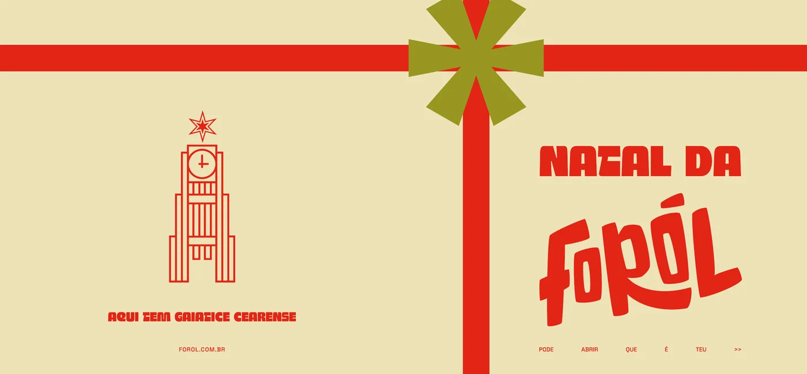
fora (contracapa · capa) 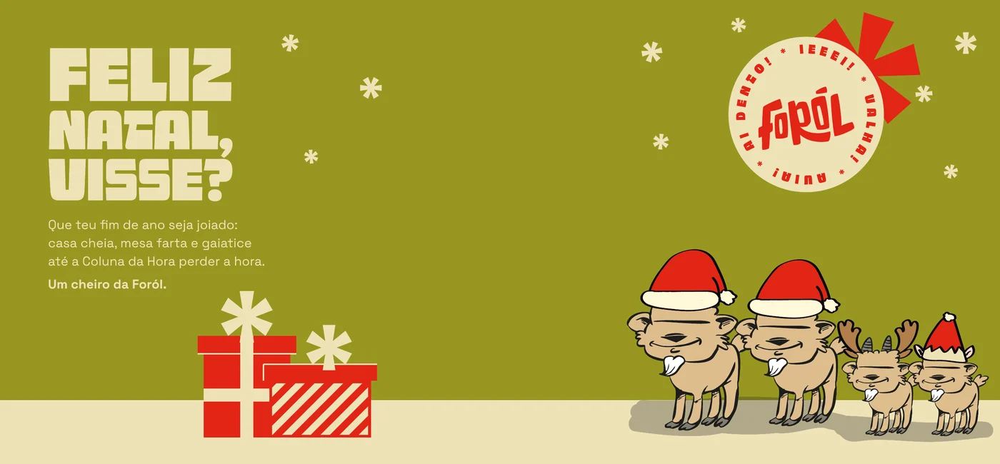
dentro 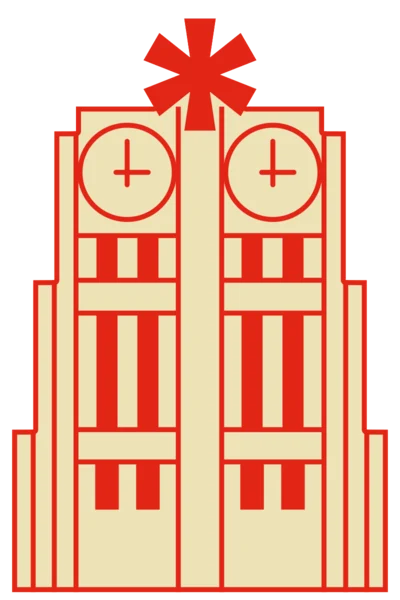
torre papel #EEE3BA · destaque #E33122 · fundo #99992FEscolher esta
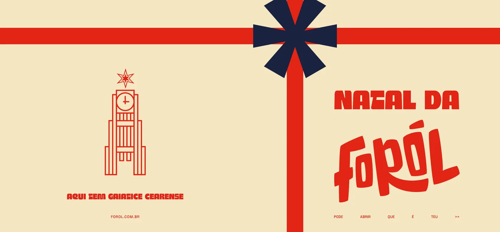
fora (contracapa · capa) 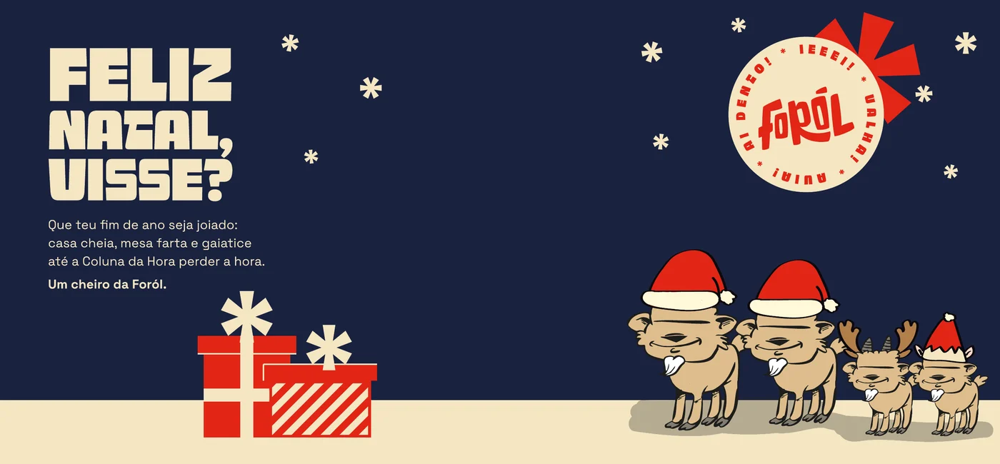
dentro torre papel #F2E6C4 · destaque #E33122 · fundo #1E2B4AEscolher esta
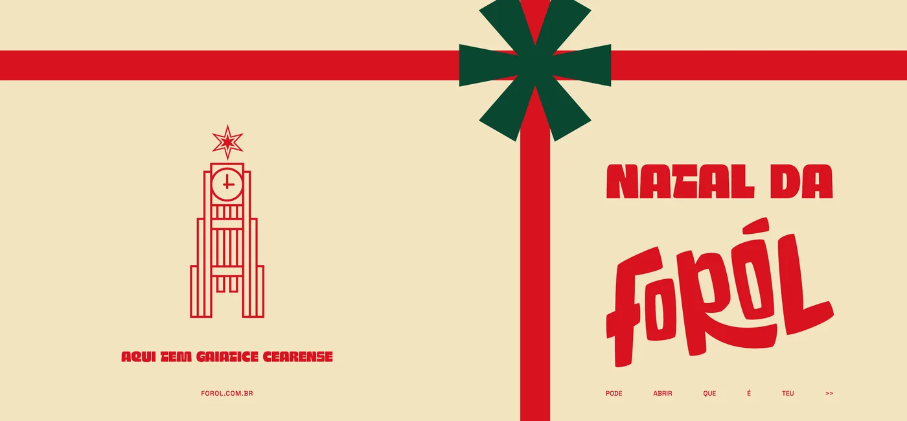
fora (contracapa · capa) 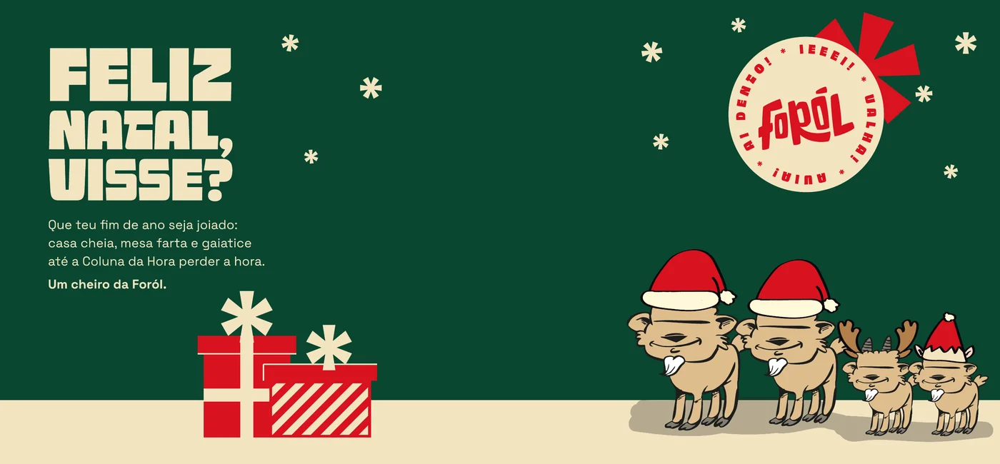
dentro 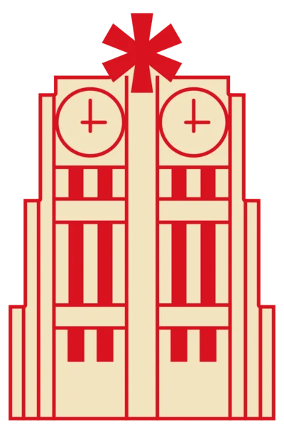
torre papel #F1E4C3 · destaque #D7262B · fundo #1F4D3BEscolher esta
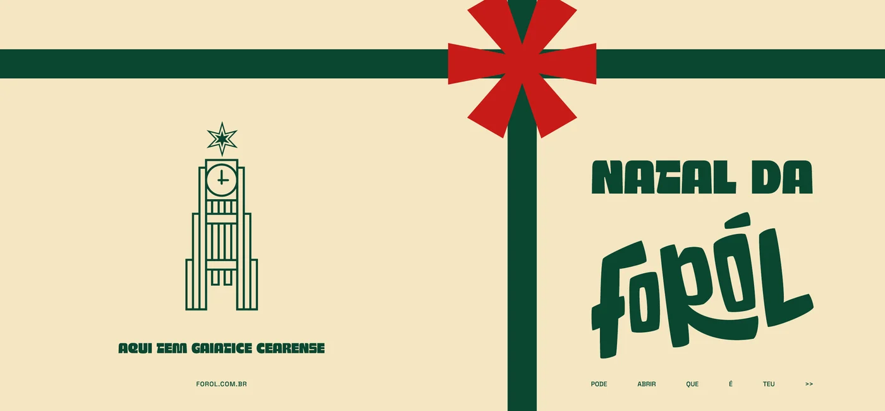
fora (contracapa · capa) 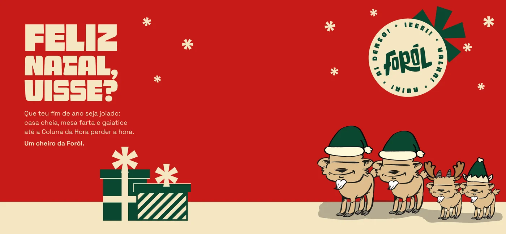
dentro torre papel #F2E6C4 · destaque #1F4D3B · fundo #C8281EEscolher esta
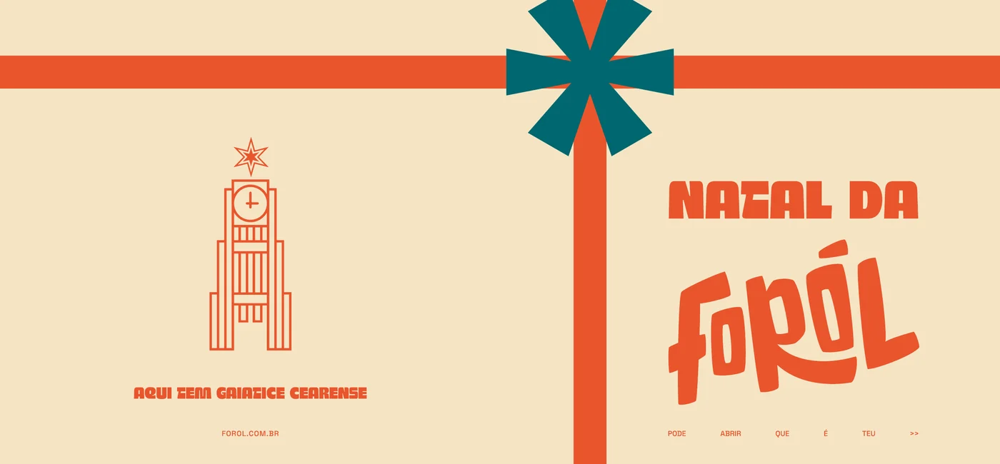
fora (contracapa · capa) 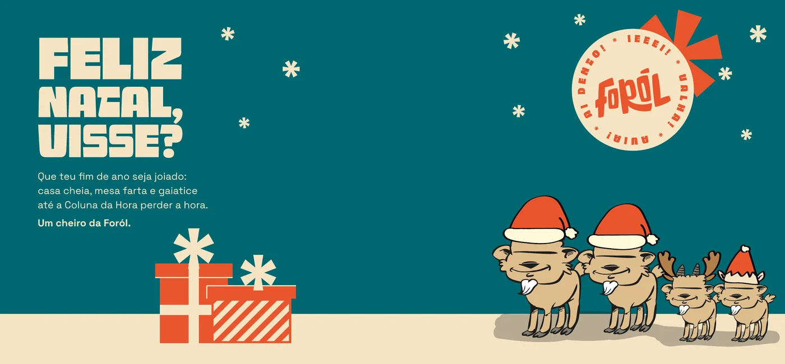
dentro 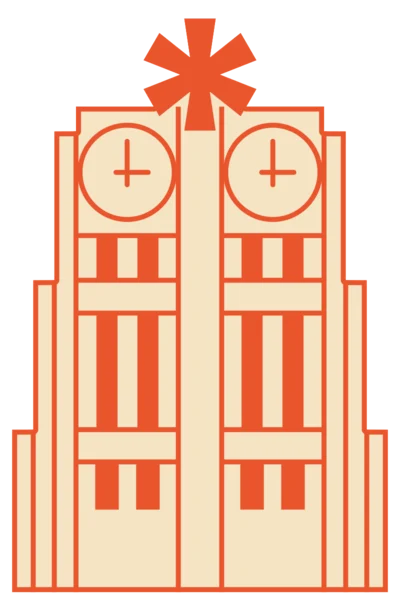
torre papel #F4E5C6 · destaque #EE5A36 · fundo #0F6B73Escolher esta
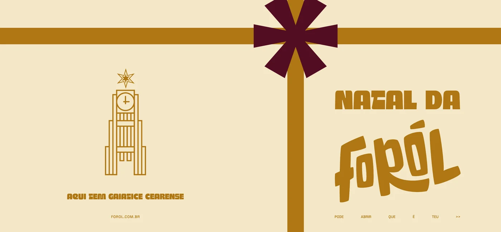
fora (contracapa · capa) 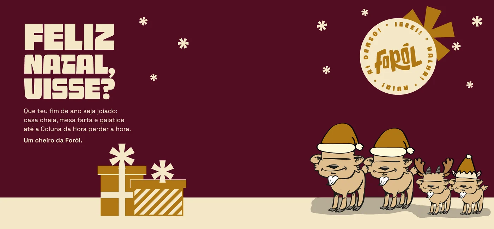
dentro torre papel #F3E7C9 · destaque #B07A1E · fundo #5B1B2CEscolher esta
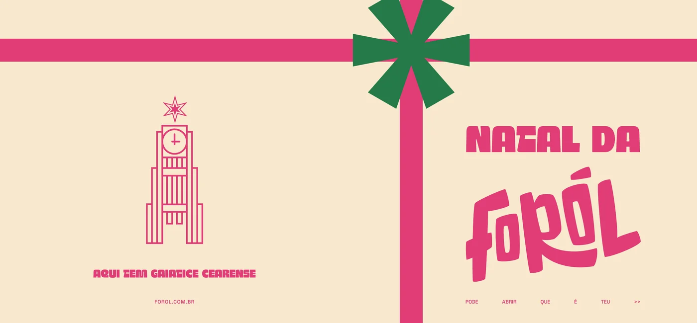
fora (contracapa · capa) 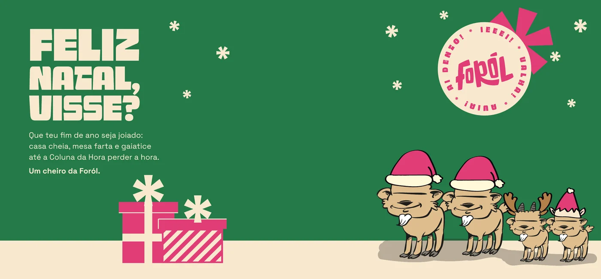
dentro 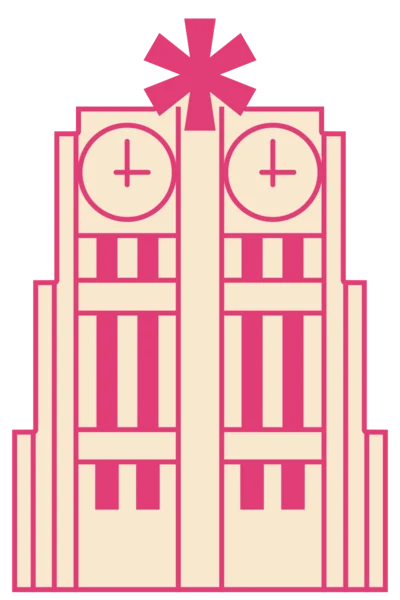
torre papel #F6E9CF · destaque #E0457B · fundo #2E7D4FEscolher esta